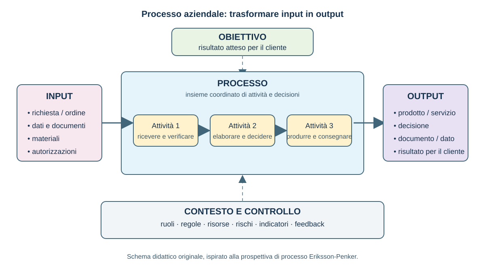
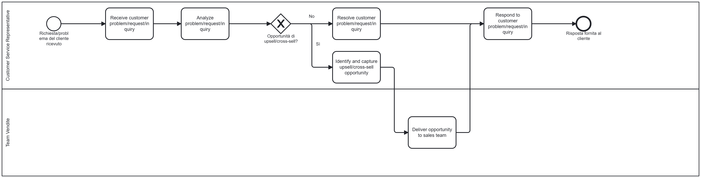
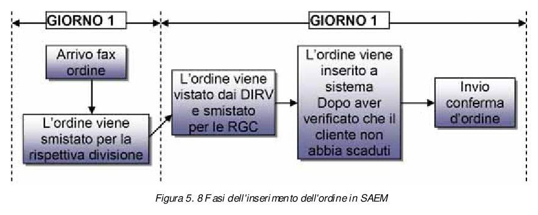

Indice del modulo
- 1 Il processo aziendale
- 1.1 Obiettivi, confini, input e output
- 1.2 Clienti interni ed esterni
- 2 Funzione, processo, attività e task
- 2.1 Come distinguere i livelli
- 3 Classificazione cross-industry
- 3.1 Tassonomie e vocabolario comune
- 3.2 Perché classificare i processi
- 4 Introduzione all'APQC Process Classification Framework
- 4.1 Le Category di processo
- 4.2 Esempi di aree funzionali
- 5 Process Group, Process e risultati attesi
- 5.1 Dalla Category al Process
- 6 Laboratorio: prima mappa gerarchica
1 Il processo aziendale
Un processo aziendale è una sequenza strutturata e ripetibile di attività che consente all'organizzazione di raggiungere un obiettivo. Non è soltanto un elenco di operazioni: è un insieme coordinato di azioni, decisioni e passaggi che porta da una situazione iniziale a un risultato atteso.
Un processo può essere eseguito da persone, sistemi informativi o macchinari e, nella maggior parte dei casi, combina questi diversi esecutori. La sua utilità consiste nel rendere comprensibile come il lavoro viene svolto e in che modo le singole attività contribuiscono al risultato complessivo.
Ogni processo riceve uno o più input e li trasforma in output. Gli input possono essere dati, informazioni, documenti, materiali, richieste, autorizzazioni o altre risorse necessarie per iniziare e completare il lavoro. Gli output sono i risultati prodotti dal processo: un bene, un servizio, una decisione, un documento, una registrazione o un'informazione destinata a un altro soggetto.
Un output non è necessariamente il prodotto venduto al cliente finale. Può essere anche un risultato intermedio che alimenta un processo successivo. Per esempio, l'ordine registrato dall'ufficio vendite può diventare l'input per la verifica amministrativa, per la preparazione della merce e per la pianificazione della consegna.
Il processo è orientato a uno scopo. Le sue componenti principali possono essere osservate attraverso queste domande:
- Obiettivo: perché il processo esiste e quale risultato deve rendere possibile?
- Attività: che cosa deve essere fatto per raggiungere il risultato?
- Ruoli: chi è responsabile delle diverse parti del lavoro?
- Regole: quali condizioni, vincoli o criteri devono essere rispettati?
- Indicatori: come si verifica se il risultato è raggiunto con tempi, costi e qualità accettabili?

Un esempio concreto è il processo APQC Manage customer service problems, requests, and inquiries. Il diagramma seguente mostra come un processo reale possa essere scomposto in attività successive, ruoli, decisioni e risultati: la richiesta viene ricevuta, analizzata e risolta oppure indirizzata verso un'opportunità commerciale. In questo modo il modello rende visibile il passaggio dal processo generale alle attività che lo compongono.

Per analizzare un processo è necessario considerarlo come un percorso completo. Si individua l'evento o la condizione che lo avvia, si descrivono le attività e le decisioni che trasformano gli input, e si definiscono uno o più risultati di conclusione. I confini stabiliscono che cosa appartiene al processo e che cosa invece resta all'esterno.
La prospettiva end-to-end segue il risultato dall'innesco fino alla consegna al destinatario, anche quando il lavoro attraversa reparti, funzioni, sedi e applicazioni differenti. Per esempio, la gestione di un ordine cliente può coinvolgere vendite, amministrazione, magazzino, logistica e sistemi informativi. Osservare il processo completo permette di riconoscere attese, passaggi ridondanti, informazioni mancanti, responsabilità poco chiare e punti in cui il risultato può degradarsi.

I processi non sono importanti soltanto perché descrivono il lavoro quotidiano. Se vengono progettati, documentati e migliorati con continuità, diventano una leva per la competitività e per la capacità dell'organizzazione di crescere senza perdere controllo:
- Vantaggio competitivo: processi chiari e fluidi aumentano l'efficienza, riducono i tempi di risposta e possono migliorare qualità del prodotto, servizio al cliente ed eccellenza operativa.
- Efficienza dei costi: la revisione periodica mette in evidenza ridondanze, attese e attività che consumano risorse senza creare valore. Le risorse liberate possono essere riallocate dove producono un beneficio maggiore.
- Scalabilità: un processo ben progettato può gestire l'aumento dei volumi o della complessità senza dipendere soltanto dalla memoria o dall'esperienza di singole persone. Le attività manuali non strutturate tendono invece a diventare un limite quando l'organizzazione cresce.
- Conformità e gestione del rischio: regole, controlli e responsabilità esplicite aiutano a rispettare obblighi normativi, policy interne e standard di qualità, riducendo errori, violazioni e rischi operativi.
- Soddisfazione del cliente: un processo orientato al cliente rende più semplice acquistare, ricevere assistenza, ottenere una risposta o risolvere un problema. La qualità percepita dipende anche dalla continuità e dalla prevedibilità del percorso.
- Coinvolgimento e produttività delle persone: ruoli e responsabilità chiari riducono confusione, sovrapposizioni e rilavorazioni. Le persone possono concentrarsi sulle attività che richiedono competenza e giudizio, invece di ricostruire ogni volta come procedere.
- Innovazione e adattamento: un processo conosciuto e misurato è più facile da modificare quando cambiano tecnologie, mercato, prodotti o aspettative dei clienti. La standardizzazione non significa immobilità: crea una base dalla quale sperimentare miglioramenti.
- Gestione delle informazioni: un processo definisce quali dati servono, chi li produce, dove vengono registrati e come vengono utilizzati. Informazioni coerenti, tempestive e protette rendono più affidabili le decisioni e i controlli.
Questi benefici dipendono dal miglioramento continuo. Un processo non dovrebbe essere documentato una volta e poi dimenticato: deve essere osservato, misurato e aggiornato quando cambiano obiettivi, strumenti, vincoli o condizioni del contesto. La documentazione, i controlli e il feedback trasformano l'esperienza operativa in conoscenza riutilizzabile e rendono possibile intervenire prima che un problema diventi strutturale.
1.1 Obiettivi, confini, input e output
La descrizione di un processo comincia dall'obiettivo: quale risultato deve produrre il processo e per quale esigenza organizzativa o del cliente? Un obiettivo ben formulato non coincide con l'elenco delle attività. Esprime il cambiamento atteso, per esempio consegnare un ordine completo entro una certa data, autorizzare una richiesta conforme ai criteri stabiliti o risolvere un problema del cliente.
L'obiettivo permette di valutare la coerenza del processo. Ogni attività dovrebbe contribuire al risultato oppure fornire un controllo necessario. Se un passaggio non ha una funzione riconoscibile, può essere una duplicazione, un'attesa o una consuetudine non più utile. L'obiettivo diventa quindi il riferimento per progettare il flusso, assegnare le responsabilità e scegliere le misure di prestazione.
I confini stabiliscono dove il processo comincia e dove termina. L'inizio può essere identificato da una richiesta del cliente, da un ordine ricevuto, da una scadenza, da un evento tecnico o dalla disponibilità di un input. La fine coincide con la consegna dell'output previsto, con la comunicazione dell'esito o con la registrazione della decisione. Definire i confini evita di estendere l'analisi senza limite e rende chiaro quali attività, ruoli e sistemi appartengono al processo.
Per delimitare correttamente un processo è utile indicare anche ciò che resta fuori. La progettazione del prodotto, per esempio, può essere un processo distinto dalla gestione dell'ordine; la manutenzione del sistema informativo può essere un servizio di supporto e non una fase interna alla vendita. La scelta dipende dall'obiettivo dell'analisi e dal livello di dettaglio richiesto, ma deve essere esplicita e coerente.
Gli input sono ciò che il processo riceve, consuma o utilizza per poter operare. Possono essere materiali, dati, documenti, informazioni, richieste, autorizzazioni, risorse economiche o capacità produttiva. Per ogni input è utile chiedersi da chi proviene, in quale formato arriva, se è completo e quali requisiti deve rispettare prima di essere utilizzato.
Gli output sono i risultati ottenuti al termine del processo o di una sua parte. Possono essere prodotti fisici, servizi erogati, decisioni, autorizzazioni, rapporti, comunicazioni, registrazioni o dati aggiornati. Un output deve essere descritto dal punto di vista del destinatario: deve essere chiaro che cosa viene consegnato, a chi, con quale livello di completezza, accuratezza, tempestività e conformità.
La relazione tra input e output può essere rappresentata come una trasformazione controllata:
- Input: ciò che alimenta il processo.
- Attività e decisioni: il lavoro che trasforma, verifica o instrada gli input.
- Controlli: verifiche che prevengono errori o individuano risultati non conformi.
- Output: il risultato prodotto e consegnato al destinatario.
- Feedback: informazioni usate per correggere il processo e migliorarne le prestazioni.
Non è sufficiente elencare input e output: occorre definire i requisiti che li rendono utilizzabili. Un input incompleto può impedire l'avvio del lavoro; un output consegnato in ritardo o con dati errati può generare rilavorazioni, reclami o rischi. Per questo l'analisi deve considerare anche gli output indesiderati e le condizioni che possono compromettere la conformità del prodotto, del servizio o della decisione.
Infine, il processo deve essere osservabile e misurabile. A seconda del caso, si possono controllare tempi di attraversamento e di attesa, puntualità delle consegne, tasso di errore, scarti e rilavorazioni, costi, frequenza degli incidenti, soddisfazione dei destinatari e prestazioni dei fornitori. Le misure non servono soltanto a giudicare il risultato finale: aiutano a capire in quale punto del processo si genera la variabilità e dove conviene intervenire.
1.2 Clienti interni ed esterni
Il cliente del processo è il soggetto che riceve, utilizza o valuta l'output. Il cliente non coincide necessariamente con chi acquista il prodotto o con chi compare nel contratto commerciale: può essere una persona, un ufficio, un altro processo, un'organizzazione partner o il destinatario finale del servizio.
Il cliente esterno si trova fuori dall'organizzazione che esegue il processo. Può essere un acquirente, un cittadino, un paziente, un'azienda cliente, un ente o un altro soggetto destinatario del prodotto o del servizio. Le sue aspettative riguardano normalmente il risultato finale, ma possono riguardare anche il modo in cui il processo viene svolto: tempi di risposta, facilità di accesso, comunicazioni, trasparenza e gestione delle anomalie.
Il cliente interno è una persona, una funzione o un processo appartenente alla stessa organizzazione e destinatario di un output intermedio. Per esempio, l'amministrazione può essere cliente interno delle vendite quando riceve un ordine completo; il magazzino può essere cliente interno dell'amministrazione quando riceve l'autorizzazione a preparare la spedizione; la logistica può essere cliente interno del magazzino quando riceve merce e documenti pronti per la consegna.
La distinzione è importante perché molti processi attraversano più funzioni. L'output prodotto da una funzione diventa spesso l'input della funzione successiva: ogni passaggio può quindi essere letto come una relazione tra un fornitore e un cliente. Se il passaggio interno è incompleto, errato o tardivo, il problema si propaga nel flusso e può arrivare fino al cliente esterno.
Il cliente interno non è un destinatario di seconda importanza. La qualità del risultato finale dipende dalla qualità degli output intermedi. Un processo che consegna informazioni incomplete al processo successivo può sembrare efficiente nel proprio segmento, ma trasferisce lavoro, attese e rischi a valle. L'analisi deve quindi rendere visibili anche le esigenze dei clienti interni e gli accordi di servizio tra funzioni.
Per identificare il cliente di un processo è utile rispondere a queste domande:
- Chi riceve l'output? Individuare il destinatario diretto e, se necessario, anche chi utilizza il risultato in una fase successiva.
- Che cosa si aspetta? Descrivere il risultato richiesto, non soltanto l'attività svolta dall'organizzazione.
- Quali requisiti deve rispettare l'output? Considerare completezza, accuratezza, formato, tempi, quantità, sicurezza e conformità.
- Come viene verificato il risultato? Individuare criteri di accettazione, controlli, reclami, richieste di correzione o indicatori di soddisfazione.
- Che cosa accade se l'output non è conforme? Tracciare rilavorazioni, rifiuti, escalation, ritardi e impatti sui processi successivi.
Un processo può avere più clienti e ciascuno può attribuire valore a caratteristiche diverse dello stesso output. Un ordine, per esempio, deve essere utile al cliente esterno che riceverà la merce, ma anche all'amministrazione che deve fatturare, al magazzino che deve preparare i colli e al vettore che deve organizzare la consegna. La scheda processo dovrebbe esplicitare questi destinatari quando hanno requisiti differenti o quando la loro mancata soddisfazione crea un rischio.
La prospettiva del cliente orienta la definizione delle misure di qualità. Non basta sapere quante attività sono state eseguite: occorre verificare se l'output è arrivato al destinatario giusto, nel momento concordato, nel formato utilizzabile e senza errori. Tempi di risposta, puntualità, completezza, accuratezza, numero di reclami e tasso di rilavorazione sono esempi di misure che collegano il funzionamento interno al valore percepito dal cliente.
2 Funzione, processo, attività e task
Funzione, processo, attività e task sono livelli diversi. La funzione è un'unità organizzativa permanente; il processo è un flusso orientato a un risultato; l'attività è un passaggio del processo; il task è un'azione elementare e verificabile.
2.1 Come distinguere i livelli
La funzione risponde alla domanda «chi»; il processo a «quale risultato si deve ottenere»; l'attività a «quale passaggio serve»; il task a «quale azione concreta viene eseguita».
Una funzione può partecipare a più processi e un processo può attraversare più funzioni. Un nome di processo efficace contiene normalmente un verbo e un oggetto, per esempio «gestire l'ordine cliente».
3 Classificazione cross-industry
Una classificazione cross-industry usa una tassonomia comune per descrivere processi presenti in organizzazioni e settori diversi. La tassonomia rende confrontabili nomi, livelli e risultati senza cancellare le specificità dell'azienda.
3.1 Tassonomie e vocabolario comune
Senza un riferimento condiviso, reparti e aziende possono usare nomi diversi per processi simili. Una tassonomia comune stabilisce categorie e relazioni gerarchiche, riducendo ambiguità e tempo di allineamento.
3.2 Perché classificare i processi
Una classificazione ordinata sostiene analisi organizzative, miglioramento continuo, benchmarking, digitalizzazione, automazione e definizione di responsabilità e indicatori.
4 Introduzione all'APQC Process Classification Framework
L'APQC Process Classification Framework è una tassonomia cross-industry di riferimento per mappare e confrontare i processi aziendali. Il corso utilizza la gerarchia Category → Process Group → Process → Activity e aggiunge il livello Task per la descrizione operativa.
Il PCF aiuta a collocare un processo in una struttura comune; non sostituisce l'analisi dell'organizzazione e non definisce i task specifici di ogni azienda.
4.1 Le Category di processo
La Category è il livello più ampio della classificazione e raggruppa processi con finalità omogenee. Le Category possono riguardare processi operativi, di gestione o di supporto.
4.2 Esempi di aree funzionali
Nel corso si incontrano esempi relativi a visione e strategia, vendite, acquisti, servizi, customer service, finance, risorse umane e tecnologia informatica. La Category è scelta in base alla finalità del processo, non al nome del reparto.
5 Process Group, Process e risultati attesi
Il Process Group raccoglie processi coerenti all'interno di una Category. Il Process rappresenta un flusso con obiettivo, confini, cliente e risultato atteso. Questa struttura permette di passare dalla vista generale alla descrizione del processo che sarà analizzato.
5.1 Dalla Category al Process
La classificazione procede dal generale al particolare: si identifica l'area funzionale, si individua il Process Group, si seleziona il Process e si verifica che il risultato atteso descriva ciò che l'organizzazione deve effettivamente produrre.
6 Laboratorio: prima mappa gerarchica
Scegliere un processo reale o simulato. Costruire una prima mappa a cinque livelli: Category, Process Group, Process, Activity e Task.
Per il momento sono sufficienti nomi, confini e risultati attesi. La scomposizione dettagliata delle Activity, le variabili e gli indicatori saranno approfonditi nei moduli successivi.
Punti chiave
- Un processo trasforma input in output per un cliente e ha obiettivo, confini, evento di avvio e risultato atteso.
- Funzione, processo, attività e task sono livelli distinti: il processo esprime il risultato, il task l'azione elementare.
- La classificazione cross-industry fornisce un vocabolario e una gerarchia comuni a organizzazioni diverse.
- APQC organizza i processi in Category, Process Group, Process e Activity; il Task viene definito dall'organizzazione.
- La prima esercitazione consiste nel costruire una mappa gerarchica a cinque livelli.